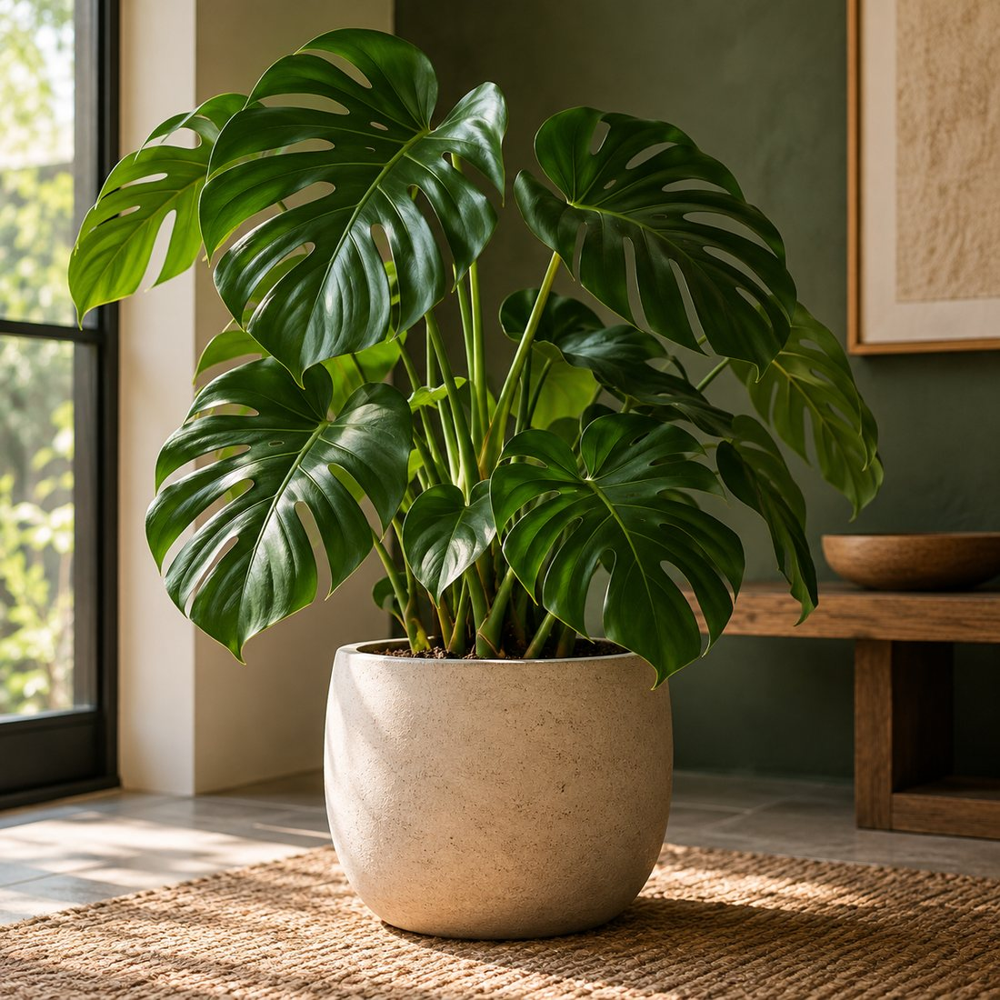
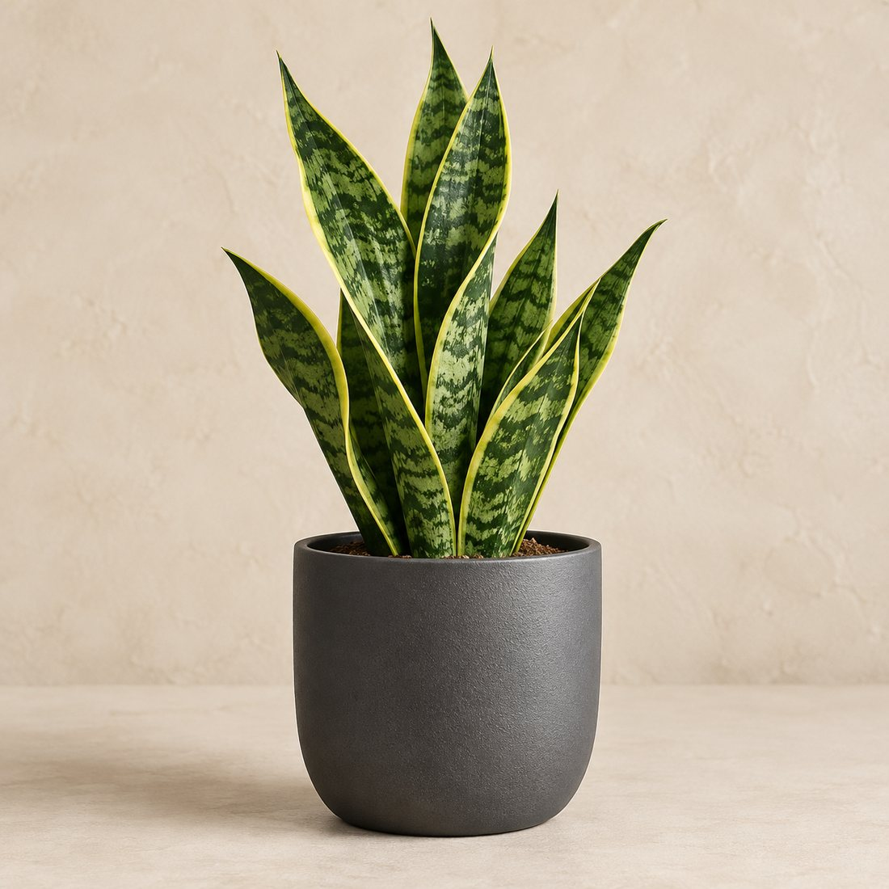

01 / LIVING
Indoor Plants
Statement foliage, easy-care silhouettes, and small-space favorites.
Shop plants →BOTANICAL LIVING / EST. 2026
Living plants, tactile vessels and useful care pieces selected for modern rooms and real routines.

THE VERDENA POINT OF VIEW
We believe the best plant collection is not the biggest one. It is the one that fits your light, your habits, your space, and the way you want to feel when you walk through the door.
SHOP BY SPACE
From first plant to full indoor jungle, start with the role you want greenery to play in the room.
Statement foliage, easy-care silhouettes, and small-space favorites.
Shop plants →


THE BOTANICAL EDIT

OUR STORY
VERDENA began with a simple observation: the right plant can change the feeling of an entire room. We build collections around that idea, combining living greenery with materials and objects that feel calm, useful, and lasting.
Our approach is editorial rather than endless — fewer choices, clearer guidance, and a better sense of how each piece can live in your home.
THE GREEN ROOM
Use height, texture and natural materials to turn forgotten corners into places you want to spend time in.
Explore the journal → LIGHT / TEXTURE / HEIGHT
LIGHT / TEXTURE / HEIGHTPLANT CARE, WITHOUT THE GUESSWORK
Good plant care is mostly about consistency. Use these simple checkpoints to build a routine that fits your home.
Observe where direct and indirect light actually lands during the day before choosing a plant.
Ask for guidance →Check the soil first. A repeatable rhythm is more useful than a rigid calendar.
Talk to our team →Choose a planter with enough space for healthy growth and a spot with comfortable airflow.
Explore planters →One weekly check for leaves, soil, light, and placement can prevent small issues becoming big ones.
Read care notes →We wanted VERDENA to feel less like a catalog and more like a beautifully edited room — useful, quiet, and full of life.
— VERDENA Studio
THE JOURNAL
Practical notes, styling ideas, and small rituals for more natural spaces.

A room-by-room approach to choosing plants by the light you already have.
Read the note →How width, height, texture, and negative space change the feel of a plant.
Read the note →A short weekly rhythm for healthier leaves, cleaner pots, and calmer spaces.
Read the note →“The site feels like a real studio rather than a generic store. The plant-care notes were especially useful.”
— Maya R.Verified customer“I bought a planter and a plant together and the proportions were exactly what I needed for my shelf.”
— Daniel K.Verified customer“Simple, calm, and easy to navigate. It feels premium without being intimidating.”
— Sofia L.Verified customerHUMAN SUPPORT
Tell us about your light, space, and routine. We can help you narrow down a plant, planter, or care setup.